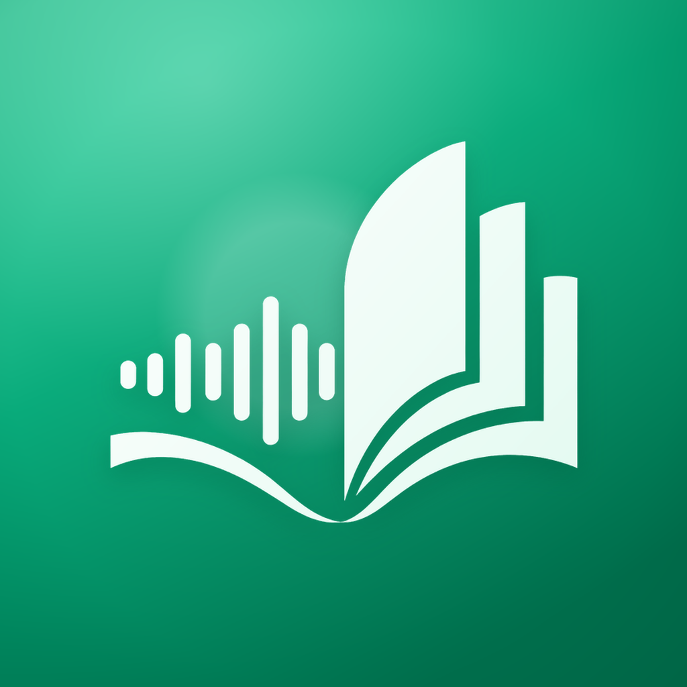
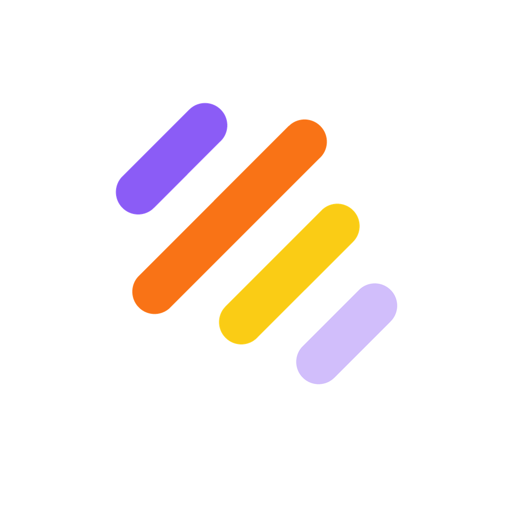
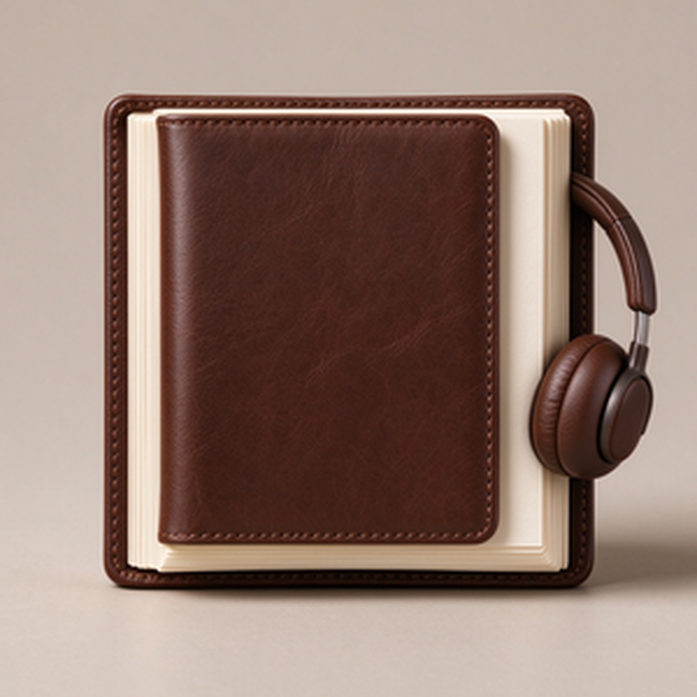
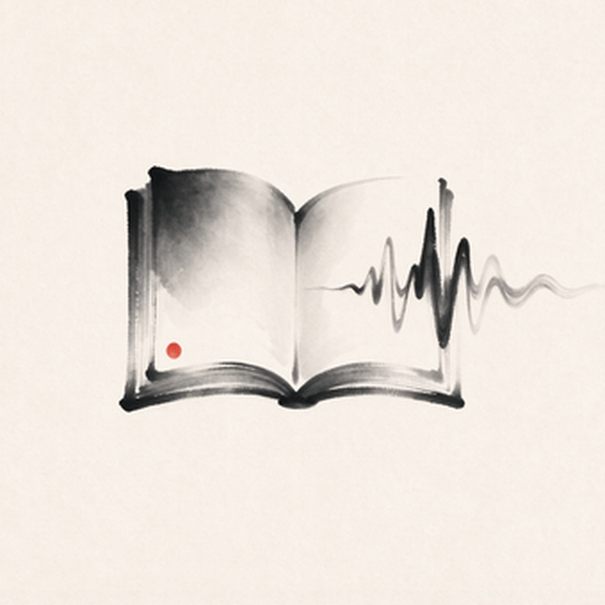
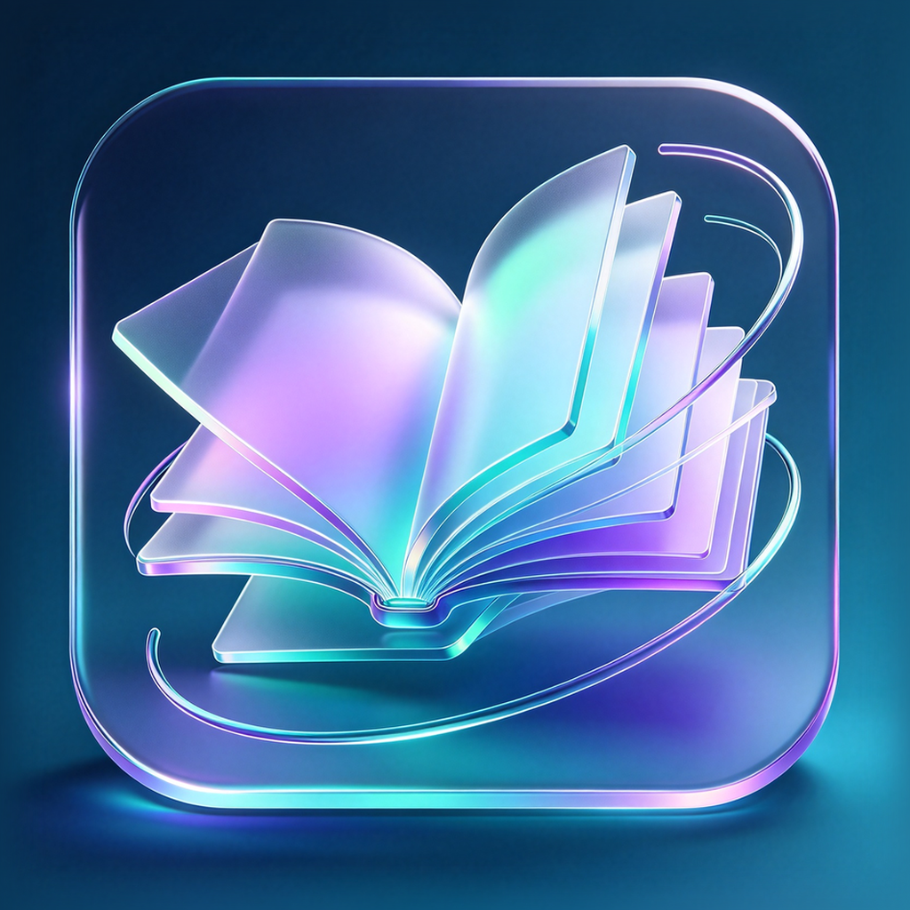

声波
圆角方（系统默认形状）





app_icon_wave。
AppScope/resources/base/media/ 与 entry/src/main/resources/base/media/ 各一套 PNG + app_icon_wave.jsonAppScope/app.json5 → alternateIcons 追加一项AppIconService.getOptions() → 追加一个 AppIconOptionstring.json → app_icon_wave = 声波